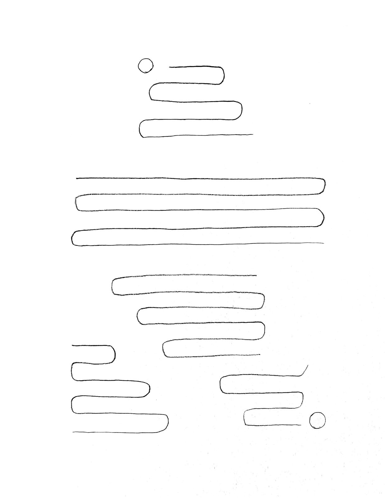

I will try to forget any drawing lesson I have ever taken and imagine how my first lesson would be, guided only by my self-learning compass. I know that art is all about connection and self-expression, which is why this first lesson is simply about having paper, a pencil, and a sharpener, playing with them as a child would, and recognizing what the creation is telling me about us as a unity.
Let's do it:
My first contact with paper and pencil was a tight grip that left a strong, clear mark on the page. I could feel in the tips of my fingers all the energy of my body trying to control the action as a coping mechanism for the anxiety of the possible outcome. And I could sense how that force was too aggressive for the pencil, the paper, my hand, my breathing and myself.
It was when I released that need to control and allowed some free space for uncertainty that I noticed how the whole action was more than me. As I used the pencil, its tip changed and created different marks over time, and the paper’s texture seemed to be waiting not to be smashed so it could reveal how beautiful it was.
This process reminded me of the value of things. How much love and life would it take me to create by myself this paper and pencil? That much love and respect is what these objects deserved.
I started drawing circles and lines and soon sketched a particular pattern of lines in the shape of a ladder that brought me special joy. My energy flowed with the rhythm of it.
I could feel how the act of drawing is about the right balance between attention to the internal and the external world. In my case, that balance comes with a vague but deep sense of comfort, joy, and serenity.

Finding a rhythm
I know that my breathing, my hand, the pencil and the paper were not perfectly in synchronization, but I enjoyed the process, and I’m so proud of myself that the beautiful piece of art is now decorating my living room.